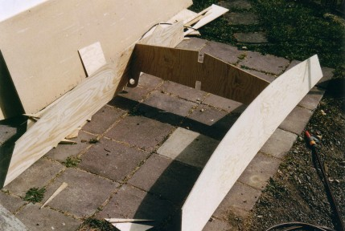

Så här byggde vi Zapturnus
Jollen heter D4 (numera D5) och är ritad av Jacques Mertens. Ritningar finns att beställa hos bateau.com. Där finns även en gratis ritning att ladda ner och det var den vi använde. Hos bateau.com finns också instruktioner och tips för bygget. Först byggde vi en modell i skala 1:10. Vi använde olika tjock papp från Cornflakespaket och datorförpackningar. vi klistrade ritningarna på pappen och klippte ut. Sedan limmades med smältlim.
Det var tur att vi gjorde en modell, för vi hittade fel på ritningen! (Men ni skall få se vad pappa gjorde längre fram ...) Fel och fel förresten, det var väldigt svårt att läsa vissa av måtten på gratisritningen.
Först byggde vi en modell i skala 1:10. Vi använde olika tjock papp från Cornflakespaket och datorförpackningar. vi klistrade ritningarna på pappen och klippte ut. Sedan limmades med smältlim.
Det var tur att vi gjorde en modell, för vi hittade fel på ritningen! (Men ni skall få se vad pappa gjorde längre fram ...) Fel och fel förresten, det var väldigt svårt att läsa vissa av måtten på gratisritningen.
Måtten las ut på 7mm plywood för botten och sidor. Med en böjlig list kan man rita jämna fina kurvor. Listen spikades fast på plywooden medan vi ritade
Här sågar vi ut spanten ur 10 mm plywood. Alla kanter på spanten är räta linjer eller cirkelbågar

Nu har vi börjat sätta ihop skott och sidor tillfälligt med hjälp av skruv. Senare skall alltihop limmas och efter att limmet torkat kan man ta bort skruven.
Enklast verkar vara att börja med mittspantet.
Monteringen fortsätter med akterspegeln
Pappa med skruvdragaren i högsta hugg. De flesta spanten är på plats nu.
Dags för kvalitetskontroll. Det ser faktiskt OK ut så här långt.
Men vad är detta? OJ DÅ! Fast vi hade kollat ritningarna och rättat ett par fel lyckades pappa att såga efter ursprungliga ritningen. Sidorna fick inte rätt lutning i anslutningen till akterspegeln. Efter att ha justerat sidorna och akterspegeln en smula gick det i alla fall att få ihop det, men båten blev c:a 5 cm kortare än avsett. Nu måste alltså botten kapas en del också.
Nu är skrovet temporärt hopsatt. Sidorna är skruvade i spant och speglar. Botten är najad med buntband till resten av delarna. Där det glipar har vi tejpat för att inte limmet skall rinna igenom när vi limmar senare.
Nu har vi vänt på skrovet. Efter att ha riktat upp skrovet har vi passat in tofterna. Nu är alla stora delar på plats och det är dags att limma alla fogar på insidan med epoxilim och cellulosafiller. Alla ytor stryks också med två lager epoxi för att impregnera träet och öka styrkan. Epoxi är inget för barn att jobba med så nu fick pappa ta över ett tag.
Nu har vi vänt på skrovet igen. Här har utsidan fått sitt första lager epoxi och alla yttre fogar är limmade. Över alla fogar har vi lagt glasfiberväv som också limmats fast med epoxi (Likadant ser det ut på insidan).
 Här har vi sågat hål i botten för att sätta i centerbordstrumman.
Här har vi sågat hål i botten för att sätta i centerbordstrumman.
Centerbordstrumman inpassad.
Centerbordstrumman fastlimmad också.
Här är har vi monterat mastfoten
Relingslisten på styrbordssidan limmas fast (Lite fler tvingar hade inte varit så dumt pappsen). Relingslisten är krökt åt två håll, så den är laminerad av två tunnare skikt.
Efter mer snickrande på skädda, årtullar osv. och en förfärlig massa slipande är skrovet äntligen färdigt! Det har fått ett sista lager epoxi och blänker vackert.
Det är dagen före midsommarafton och vi hoppas kunna sjösätta på midsommardagen.
Roder, rorkult, sticksvärd, mast, spristake och segel har vi också gjort själva. Årorna är köpta på Erlandssons. Fingerlingar (Roderbeslag) är för en optimistjolle och fanns också hos Erlandssons. Seglet är gjort av ett partytält, allt tågvirke är Spectra.
Här är allt monterat på båten och det är nu midsommarafton
 Under aktertoften finns precis plats för sticksvärd och roder. Det får också plats Colaburkar och pappas burkar för fisketurer.
Under aktertoften finns precis plats för sticksvärd och roder. Det får också plats Colaburkar och pappas burkar för fisketurer.
Äntligen!! Det är midsommardagen och jag och pappa tar j ungfruturen. Det var lite läskigt i början, men när man vant sig märker man att Zapturnuz är mycket stabil.
Nu har vi målat Zapturnuz vit på utsidan. Här är jag och kusin Kalle ute på en tur
Erfarenheter av bygget
- Jättekul. Lättare än man kan tro.
- Båten blev superbra att segla och ro, så lätt att den kan hanteras av barn. Bär tre vuxna. Kan med viss möda bäras av en vuxen.
- Totalt tog bygget c:a 80 timmar, varav mindre än hälften för själva skrovet och resten för rundhult, sticksvärd, roder, segel etc. Total kostnad riggad och klar drygt 4000:-
- Vanliga handverktyg duger bra. Elsåg och elslip underlättar. Hyvel, smygvinkel och sandpappersbräda användes mycket.
- Köp fler tvingar.
- Seglet gjorde vi själva. Inga överlapp eller kilar, utan formen ges på gammalt vis enbart av rundningen i liken. Material: en vägg till ett partytält, mattejp, flätad nylonlina i liken och öljetter från Clas Olsson. Kostnad c:a 60 kr, arbetstid c:a 3 timmar. Det har fungerat bra i två år. Sen började tejpen släppa och vi har nu sytt alla fållar. Gissar att det håller ytterligare en säsong men knappast mer, vi får väl se.
- Det går bra att bygga under så enkla förhållanden som visas. Enda gången man behöver vara riktigt noga är när man riktar upp båten före limning av insidan. Kolla att skrovet fortfarande är rakt och justera vid behov före limning av utsidan och även före limning av tofter. Det är först när tofterna sitter på plats som skrovet blir riktigt vridstyvt.
- 6mm plywood till bordläggning och 9 mm till spanten anges i ritningarna. Det ger en något lättare båt, samtidigt som det blir ändå enklare att bygga. Vi använde 7 och 10 mm eftersom det var lagervara och det fungerade också.
- SP Epoxi fungerade utmärkt. WEST Epoxi gav "fiskögon" på ytan, möjligen gjorde vi något fel? Tack och lov använde vi SP till merparten av bygget, WEST endast till sticksvärd och roder.
- Om ni blir sugna på att bygga - läs skyddsinstruktionerna för arbete med Epoxi och följ dem!
- AutoCad ritningar i millimeter (justerade) kan fås från pappsen (email: lennart@bosser.com)